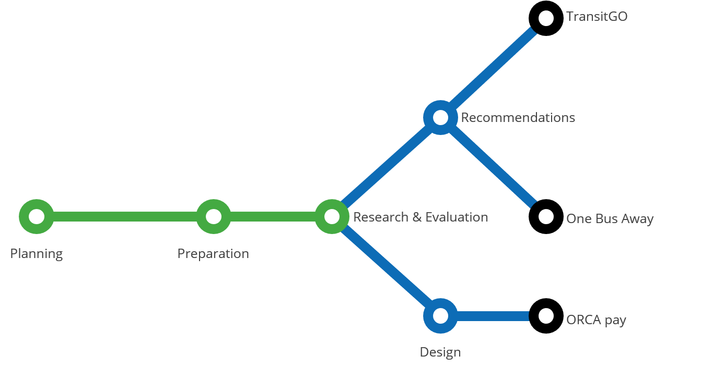
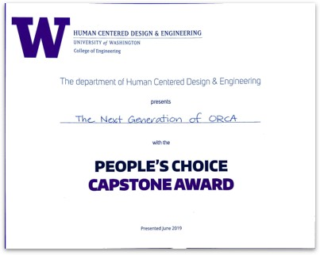

The Next Generation of ORCA
Reimagining Seattle Public Transportation
Reimagining Seattle Public Transportation

ORCA, Puget Sound’s inter-agency public transit system, has had a stagnant 60% adoption rate for years despite the best efforts of transit agencies. It has been demonstrated in other cities, namely London, that eliminating cash payment can increase the efficiency of public transit by up to 30%. For our project, we took on the challenge of reducing cash payment in Seattle, and increasing a stagnant 60% ORCA adoption rate, specifically for event attendees as a type of infrequent rider.
We began by performing user research and usability testing on the TransitGO mobile ticketing application. We identified some key functionality that users expect in a mobile transit service, and came to the conclusion that mobile ticketing does not meet the needs of our users.
We identified next gen ORCA as the best reasonable solution and dedicated our project to designing the best mobile experience for ORCA users we could based on our research. ORCA pay, our final application, is designed to fit into the next gen ORCA system that is planned to be rolled out in 2021. The introduction of next gen ORCA will allow users to instantly manage several ORCA accounts at once as well as use their phone as a credential to pay for train, lightrail, bus, streetcar, and water taxi fare.
This is a brief overview of the process and the deliverables created for our 2019 HCDE capstone project. The project was a collaboration of our team, which consisted of:
and our sponsors:
My primary responsibilities included the application design and the interactive prototype as well as having a major hand in the planning and implementation phases of the research and evaluation stages of the project and the design work for the TransitGO recommendations.
Our process had two major phases that were subdivided into the four main milestones (which themselves are subdivided). The first phase was our Research and Evaluation and the second was our Designs and Recommendations. Both phases and the elements they contain are detailed further on this page.
Research and Evaluation were done simultaneously during our project. This was because we were evaluating the existing TransitGO application and researching the wants and needs of our user group. Milestone 1: Preparation and Milestone 2: Research and Evaluation both contributed to this phase of the project. Milestone 1 contained the initial research and tools we created to do the Research and Evaluation and Milestone 2 contained the findings of what we did.
read more here
read more here
We had multiple deliverables for our capstone project. Each deliverable had their own development process that grew from the findings of our research and evaluation.
Three main things pushed us to shift our focus to next gen ORCA over a redesign of TransitGO. First, next gen ORCA provides more advantages over cash than TransitGO. Second, next gen ORCA provides more of the features that our research found users wanted and needed. And third, next gen ORCA will make TransitGO obsolete. These three points led us as a team to give quick fix design recommendations for TransitGO over an in-depth redesign and change our focus to designing a companion app for next gen ORCA.
read more here
Once we had decided to work on next gen ORCA we needed to determine what kind of an application would best serve the wants and needs of the user that we found through our research. We eventually settled on a two app system, one payment app, and one utility app. We made this decision because of the many separate use cases of these functions, allowing non ORCA users to still access the utility functions necessary to navigate Seattle and to avoid the bloated hard to navigate application that many transportation agencies (including Seattle) have ended up with. We designed the payment application, that we named ORCApay, and for the utility application because it is already a well-established application with plans to expand to cover most of the utility functions that would be in a Puget Sound Transit Utility app, we decided to recommend a partnership with OneBusAway.
read more here
 The final presentation we had of our project was at the 2019 HCDE Open House. This was a joint presentation of all the HCDE bachelors and masters capstone projects from the 2018-2018 academic year. For this presentation we created a poster and business cards with access to the interactive prototype and the promotion video as well as having a phone running the interactive prototype and a laptop running the promotional video for people to view. Additional things we did to bring in more context of our project was having small light rails on the table and wearing the King County Metro vests we were given to wear at the while conducting our on the ground interviews and usability studies.
The final presentation we had of our project was at the 2019 HCDE Open House. This was a joint presentation of all the HCDE bachelors and masters capstone projects from the 2018-2018 academic year. For this presentation we created a poster and business cards with access to the interactive prototype and the promotion video as well as having a phone running the interactive prototype and a laptop running the promotional video for people to view. Additional things we did to bring in more context of our project was having small light rails on the table and wearing the King County Metro vests we were given to wear at the while conducting our on the ground interviews and usability studies.
I spoke to many open house attendees and judges, giving an elevator pitch version of our process and deliverables, as well answering any questions. All of our efforts for our project and at the open house resulted our team winning the people’s choice award.

Milestone 1: https://docs.google.com/document/d/1rn7s6XW8wdLcfVSM7NE-gJLogfIYVUufUfWBAUvX_Ww/edit?usp=sharing
Milestone 2: https://docs.google.com/document/d/12Bzt1l9IGLdFxYL89E8HrP8VGL4Q4mUn8V0BvHI0j_M/edit?usp=sharing
Milestone 3: https://docs.google.com/document/d/1spW58oc1hYct5zBBxe2d7_-tXj6FMGIkqouRq-mzXcM/edit?usp=sharing
Milestone 4: https://docs.google.com/document/d/127kLgQgMj5BzJdanlZZuMr3ZVUP6Ovd56E6vDtVPLKk/edit?usp=sharing
Interactive Prototype: https://www.figma.com/proto/WeUIWDrrJTGpeZmfb8sakP/ORCA-pay-Style-Guide-Colors?node-id=44%3A0&scaling=scale-down
Poster: https://drive.google.com/file/d/1QY9SJP7eqSJTTaJoEi8-8L3beUOT22xK/view?usp=sharing
Video: https://www.youtube.com/watch?v=svSOsrdQEcc&feature=youtu.be